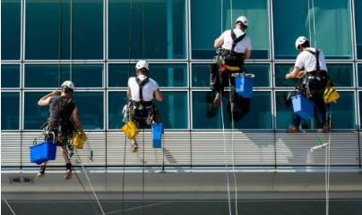
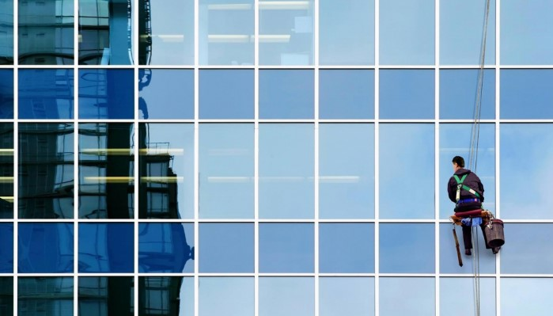
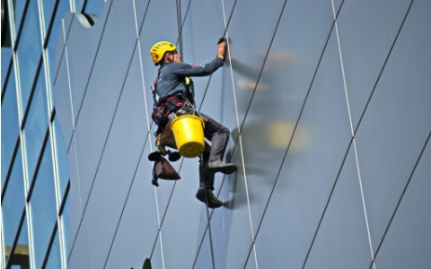

Nuestro equipo de trabajo cuenta con entrenamiento adecuado y las respectivas certificaciones de servicios en altura. Tanto en la parte operativa como seguridad.
Completamos nuestra ingeniería de servicios con procedimientos claros y específicos que se diseñan en función del tipo de trabajo a realizar.
¿En que consiste?
En el momento en el que alguien nos habla de la limpieza de cristales en altura se nos viene a la mente la imagen de un trabajador con casco y arnés colgando desde el piso 40 de un edificio y al trabajador de la oficina de dicha planta asustándose al ver como alguien está colgando desde tanta altura.
IMAGENES DEL TRABAJO DE LIMPIEZA REALIZADO

Personal calificadoLimpieza externa Shopping

Personal rascacielos frontal

Personal rascacielos lateral
Limpieza de vidrios en altura.
Limpieza de alucubond.
Rehabilitación, restauración de fachadas en altura.